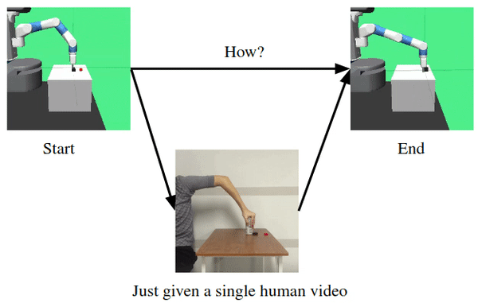

Email: quanzhou.li[at]mail.utoronto.ca
I am currently a research assistant at People, AI, & Robots. Research Group, University of Toronto. I am supervised by Prof. Animesh Garg. My current research interests are robotics and reinforcement learning.
I graduated from University of Toronto with High Distinction in 2020. Before I transfered to U of T in 2018, I spent two years at Beihang University, Beijing, studying computer science and mathematics.
|

|
Learning by Watching: Physical Imitation of Manipulation Skills from Human Videos Haoyu Xiong, Quanzhou Li, Yun-Chun Chen, Homanga Bharadhwaj, Samrath Sinha, Animesh Garg ICRA 2021, under reviewIn this paper we develop a perception module that learns to translate human videos to the robot domain followed by keypoint detection learned in an unsupervised fashion. The key insight of our method lies in explicitly exploiting the kinematics and motion information embedded in the video to learn structured representations. website / video |